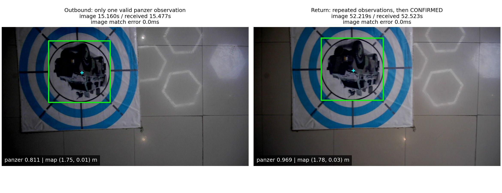
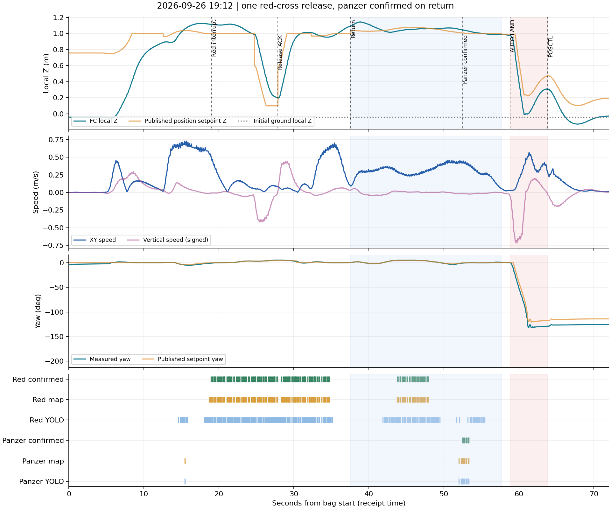
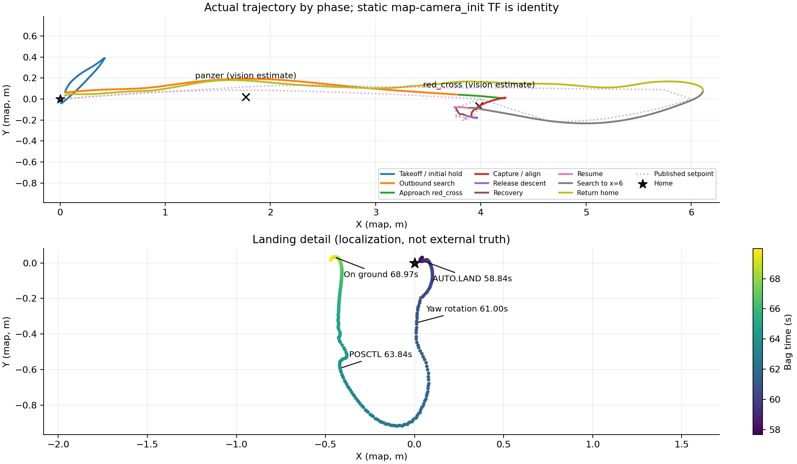

红十字一投完成；装甲车在返航时才确认
2026-09-26 19:12 · 最简直线投递测试 · 101.5秒 / 1倍速 · 原始记录离线回放
27.87秒红十字槽1释放服务ACK成功，随后恢复搜索。37.53秒航线完成返航；52.53秒装甲车才确认，当前返航阶段不接受新中断。降落旋转后人工接管已由现场确认。
完整报告 · 精确指标 · 下载汇报MP4 · 复用工具说明
circle是辅助几何ID，不计作额外投递目标；selected表示视觉认可，不表示任务已接纳。像素框按源图时间回贴，在线任务按录包接收时间显示。坐标为机载估计，无外部落点真值。
最新20:52远端代码晚于这次飞行：最简测试改为POSCTL交飞手；默认capture_height=0.10≤auto_land_height=0.15，与启动检查冲突。报告中已单独指出；本轮未修改飞行代码。
装甲车两次经过

高度、速度与候选时序

轨迹与降落记录
